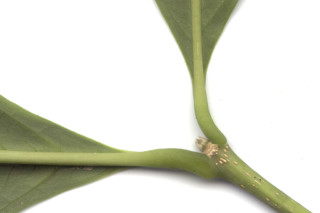
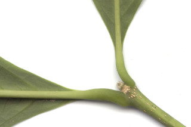

| Leaves : | Leaves simple , opposite , decussate ; stipule interpetiolar caducous and leaving scar ; petiole up to 1 cm long, planoconvex in corss section, pubescent when young; lamina 7.5- 16.5 x 4-7.4 cm, elliptic or narrow obovate , apex acuminate , base acute or cuneate , margin crenate (usually above two third of its length), membranous or chartaceous , glabrous beneath; midrib flat or slightly canaliculate above; secondary_nerves 7-8 pairs, gradually curved; tertiary_nerves distantly percurrent . |
 
